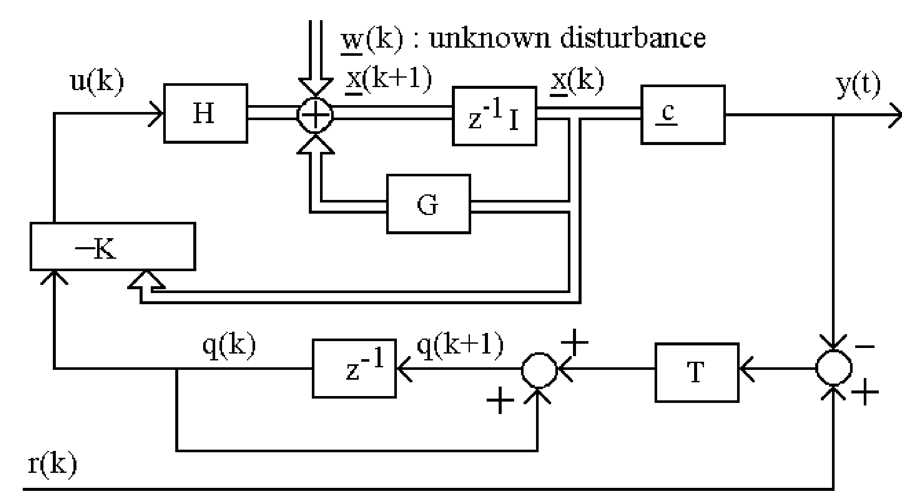
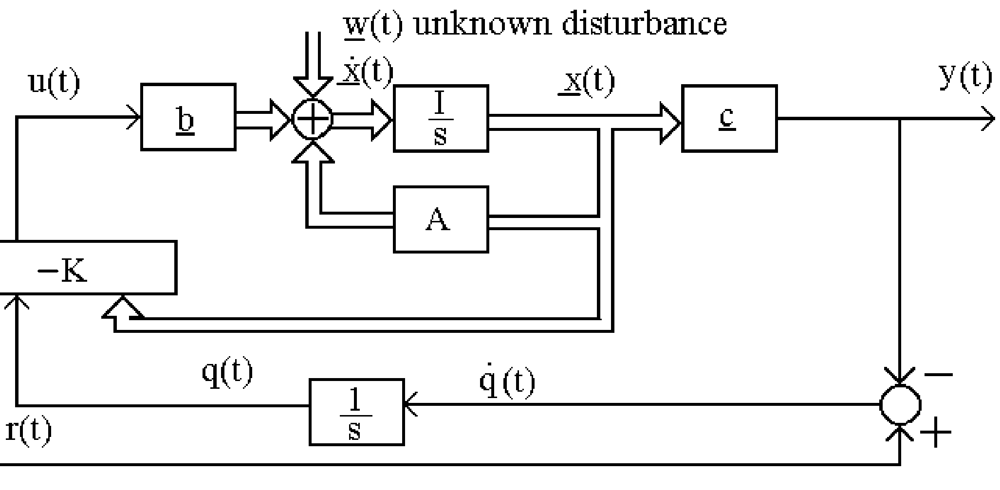
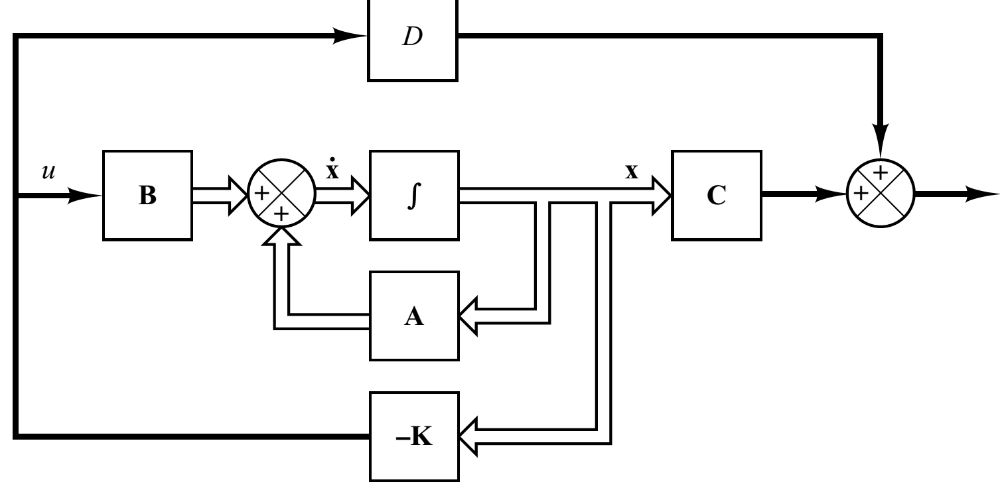
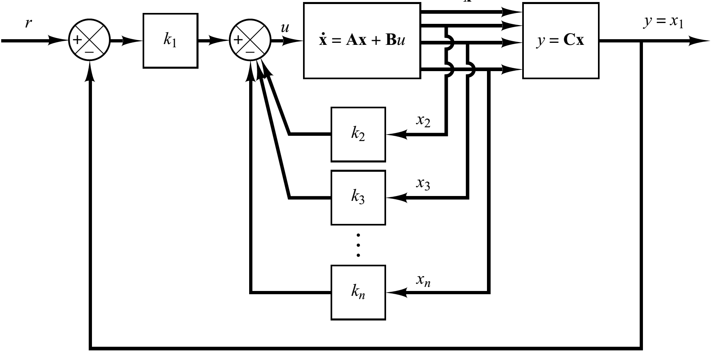
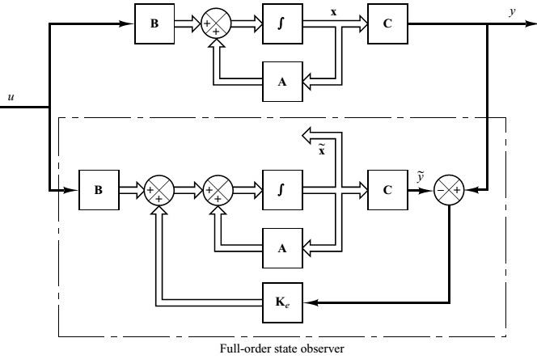
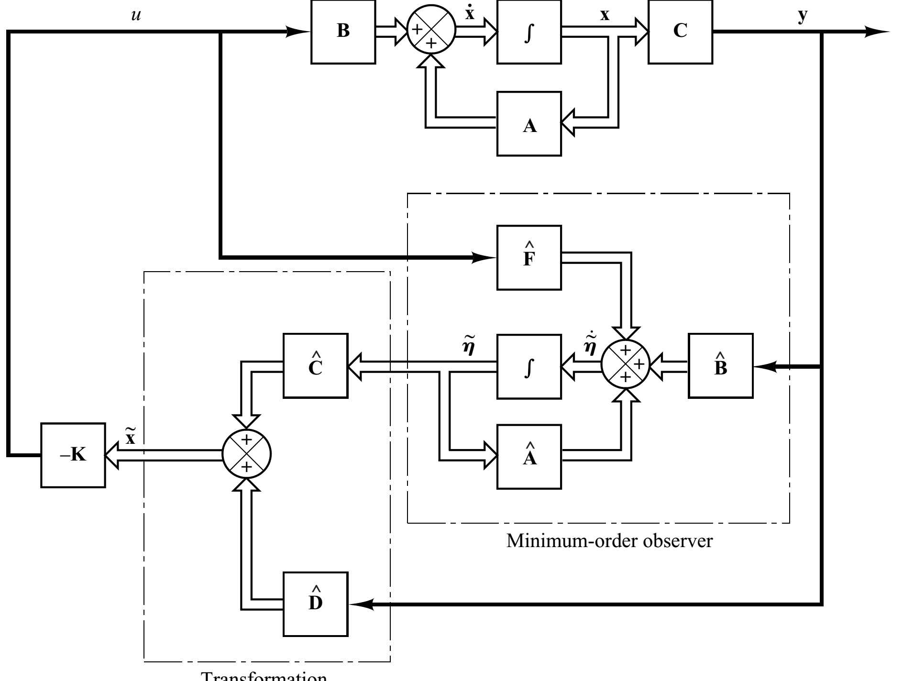
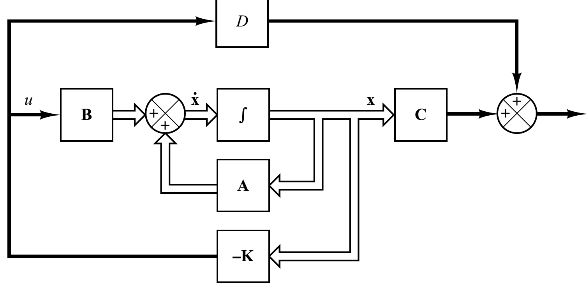
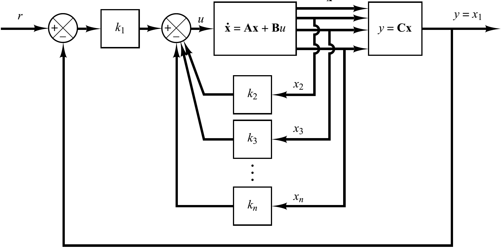
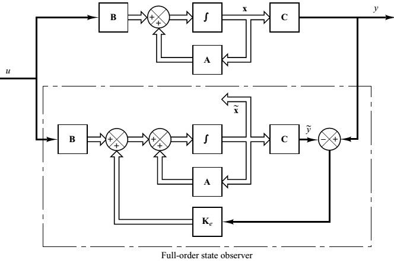
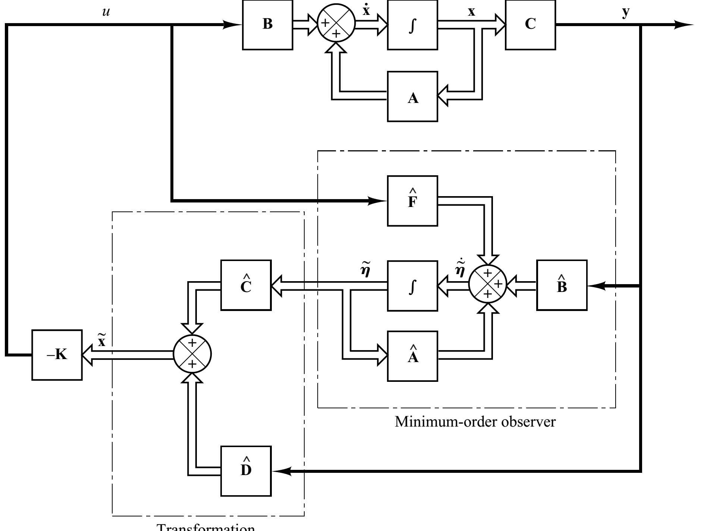

Necessary and Sufficient Condition for Stability
1. \(|a_n| < |a_0|\)
2. \(P(1) > 0\)
3.
\( \seteqsection {10} \)
\begin{align*} P(-1) & > 0 \ \text {for n even } \\ & < 0 \ \text {for n odd} \end{align*}
4. \(b_{n-1}> |b_0|, |c_{n-2}|>|c_0|, \cdots |q_2| > |q_0|\)
Special Case n =2
\(P(z) =a_0z^2+a_1z+a_2\)
| \(z^0\) | \(z^1\) | \(z^2\) |
| \(a_2\) | \(a_1\) | \(a_0\) |
\(P(z) \neq 0\) for \(|z| \geq 1\) if and only if
1. \(|a_2| < |a_0|\)
2. \(P(1) > 0\)
3. \(P(-1) > 0 \quad (n=2)\)
Root Locus presents the poles of the closed loop system when the gain K changes from zero to infinity.
Construction of the Root Locus
Open loop transfer function \(\displaystyle \text {KH}\left ( s \right )G\left ( s \right ) = K\frac {B(s)}{A(s)}\)
m: the order of the open-loop numerator polynomial.
n: the order of the open-loop denominator polynomial. \(q=n-m\)
Rule 1: number of branches equals the number of poles of the open-loop transfer function
Rule 2: If the total number of poles and zeros of the open-loop system to the right of the s-point on the real axis is odd, then this point lies on the locus.
Rule 3: The locus starting point (K=0) are at the open-loop poles and the locus ending points (K=\(\infty \)) are at the open loop zeros and n-m branches terminate at infinity.
Rule 4 and 5: Slope of asymptotes of root locus as ‘s’ approaches infinity.
Abscissa of the intersection between asymptotes of root locus and real-axis.
\( \seteqsection {10} \)
\begin{align*} & \sigma = {\frac {\sum \limits _{i = 1}^n {{p_i}} - \sum \limits _{i = 1}^m {{z_i}} }{q}} \quad \theta = \pm r{\frac {180}{q}} \quad \text {where r=1, 3, 5} \\ & f\left ( s \right ) = A\left ( s \right ) + KB\left ( s \right ) = 0\ \ \ \ and\ \ \ \ K = - \frac {A\left ( s \right )}{B\left ( s \right )} \\ & \frac {\text {dK}}{\text {ds}} = - \frac {A^{’}\left ( s \right )B\left ( s \right ) - A\left ( s \right )B^{’}\left ( s \right )}{B^{2}\left ( s \right )} = 0 \\ \end{align*}
Rule 5:
Rule 6: Break-away and break-in points. From the characteristic equation
\[f\left ( s \right ) = A\left ( s \right ) + KB\left ( s \right ) = 0\ \ \ \ and\ \ \ \ K = - \frac {A\left ( s \right )}{B\left ( s \right )}\]
The break-away and break-in points can be found from
\[\frac {\text {dK}}{\text {ds}} = - \frac {A^{’}\left ( s \right )B\left ( s \right ) - A\left ( s \right )B^{’}\left ( s \right )}{B^{2}\left ( s \right )} = 0 \]
Rule 7: Angle of departure from complex poles or zeros. Subtract from \(180^o\) the sum of all angles from all other zeros and poles of the open-loop system to the complex pole (or zero) with appropriate signs.
\( \seteqsection {10} \)
\begin{align*} & \text {Z-transform: Definition} \quad F(z)=Z[f(t)]-Z[f(kT)]=\sum _{k=0}^{\infty }f(kT)z^{-k} \\ & e^\ast (\infty )=\lim _{z \rightarrow 1} (1-z^{-1})E(z) \quad K_p=\lim _{z \rightarrow 1} GH(z), \quad e^\ast (\infty ) = \frac {1}{1+K_p} \\ & e^\ast (\infty ) = \frac {1}{K_v}, \quad K_v = \lim _{z \rightarrow 1} \frac {(1-z^{-1}) GH(z)}{T} \\ & e^\ast (\infty ) = \frac {1}{K_a}, \quad K_a = \lim _{z \rightarrow 1}\frac {(1-z^{-1})^2 GH(z)}{T^2} \end{align*}
Linear Factor Rule. For each factor of \(Q\) of the form \((ax+b)^m\), the partial fraction decomposition contains the following sum of \(m\) partial fractions:
\[ \frac {A_1}{ax+b} + \frac {A_2}{(ax+b)^2} + \cdots + \frac {A_m}{(ax+b)^m}, \]
where the \(A_i\) are constants to be determined.
Quadratic Factor Rule. For each factor of \(Q\) of the form \((ax^2+bx+c)^m\), where \(ax^2+bx+c\) is an irreducible quadratic, the following sum of \(m\) partial fractions:
\[ \frac {A_1x+B_1}{ax^2+bx+c} + \frac {A_2x+B_2}{(ax^2+bx+c)^2} + \cdots + \frac {A_mx+B_m}{(ax^2+bx+c)^m}, \]
where the \(A_i\) and \(B_i\) are constants to be determined.
Geometric Sum \(\sum \limits _{k = -N}^{N} {ar^{k - 1} = a\frac {1-r^{N}}{{1 - r}}} \sum _{i=0}^\infty a^i=\frac {1}{1-a}\)
\(x(k+2)-\frac {3}{2}x(k+1)+\frac {1}{2}x(k)=u(k), \text (x(0)=1,x(1)=5/2) \)
\([z^2X(z)-z^2x(0)-zx(1)]-\frac {3}{2}(zX(z)-zx(0)]+\frac {1}{2}X(z)=\frac {z}{z-1}\)
Effects of T on Transient Behaviour \(s= -\zeta \omega _n \pm j \omega _n \sqrt {1-\zeta ^2}\), \(\zeta \): damping ratio \(\omega _n\): undamped natural frequency, \(\omega _d\): damped natural frequency \(z=e^{Ts} \rightarrow z= \exp \left [T(-\zeta \omega _n +j\omega _n \sqrt {1-\zeta ^2})\right ]\), and \(|z|=e^{-T \zeta \omega _n}\), \(\angle z = T \omega _n \sqrt {1-\zeta ^2}= T \omega _d\). \(\uparrow T\) makes system less stable (for the same gain K) than \(\downarrow T\). Matrix Inverses for 2x2 and 3x3
\( \seteqsection {10} \)
\begin{align*} & A^{-1} = \begin {bmatrix} a & b \\ c & d \end {bmatrix}^{-1}= \frac {1}{|A|}\begin {bmatrix} d & -b \\ -c & a \end {bmatrix} \ \begin {bmatrix} a & b & c \\ d & e & f \\ g & h & i \end {bmatrix}^{-1} \\ & A^{-1} = \frac {1}{|A|}\begin {bmatrix} +\begin {vmatrix} e & f \\ h & i \end {vmatrix} & -\begin {vmatrix} b & c \\ h & i \end {vmatrix} & +\begin {vmatrix} b & c \\ e & f \end {vmatrix} \\ & & \\ -\begin {vmatrix} d & f \\ g & i \end {vmatrix} & +\begin {vmatrix} a & c \\ g & i \end {vmatrix} & -\begin {vmatrix} a & c \\ d & f \end {vmatrix} \\ & & \\ +\begin {vmatrix} d & e \\ g & h \end {vmatrix} & -\begin {vmatrix} a & b \\ g & h \end {vmatrix} & +\begin {vmatrix} a & b \\ d & e \end {vmatrix} \end {bmatrix}^{-1} \end{align*}
Bilinear Transform \(s= \frac {2(1-z^{-1})}{T(1+z^{-1})}\), \(z=\cfrac {1+0.5Ts}{1-0.5Ts}\).
1. Stability \(\Re [s] < 0\)
\(\displaystyle \Re \left (\frac {2}{T} \frac {1-z^{-1}}{1+z^{-1}}\right )= \Re \left (\frac {2}{T}\frac {z-1}{z+1}\right ) < 0\), \(z= \sigma + j \omega \)
\(\displaystyle \Re \frac {z-1}{z+1}=\Re \left [\frac {\sigma ^2-1+\omega ^2+2j\omega }{(\sigma +1)^2+\omega ^2}\right ] \rightarrow \sigma ^2-1+\omega ^2 < 0\).
Solution of inhomogeneous state equations scalar \(\dot {x}=ax+bu \quad \dot {x}-ax=bu\)
\( \seteqsection {10} \)
\begin{align*} & e^{-at}[\dot {x}(t)-ax(t)]=\underbrace {\frac {d}{dt}[e^{-at}x(t)]=e^{-at}bu(t)}_{\text {integrate ~$0 \rightarrow t$}} \\ & e^{-at}x(t)-x(0) = \int ^t_0 e^{-a \tau }bu(\tau ) d\tau \\ & \rightarrow x(t)=e^{at}x(0)+e^{at}\int _0^te^{-a\tau }bu(\tau )d\tau \end{align*}
matrix: \(\dot (x)=Ax+bu\), but taking \(\mathcal {L}^{-1}\) leads to \(x(t)=e^{At}x(0)+\int _{0}^{t}e^{A(t-\tau )}bu(\tau ) d\tau \)
Controllable Canonical Form
\( \seteqsection {10} \)
\begin{align*} & G(z) = \frac {b_0+b_1z^{-1}+ \cdots + b_nz^{-n}}{1+a_1z^{-1}+ \cdots + a_n}= \frac {b_0z^n+b_1z^{n-1}+ \cdots + b_n}{z^n+a_1z^{n-1}+\cdots + a_n} \\ & G(z)= b_0 + \frac {(b_1-a_1b_0)z^{-1}+(b_2-a_2b_0)z^{-2}+ \cdots + (b_n-a_nb_0)z^{-n-1}}{1+a_1z^{-1}+a_2z^{-2}+ \cdots + a_nz^{-n}} \\ & \begin {bmatrix} x_1(k+1) \\ \vdots \\ x_n(k+1) \end {bmatrix}= \begin {bmatrix} 0 & 1 & 0 & \cdots \\ \vdots & \cdots & & \vdots \\ \vdots & & \cdots & 1 \\ -a_n & \cdots & \cdots & -a_1 \end {bmatrix}\begin {bmatrix} x_1(k) \\ \vdots \\ x_n(k) \end {bmatrix}+\begin {bmatrix} 0 \\ \vdots \\ 0 \\ 1 \end {bmatrix}u(k) \\ & y(k) = \begin {bmatrix} b_n-a_nb_0, & b_{n-1}a_{n-1}b_0, & b_1-a_1b_0 \end {bmatrix} \begin {bmatrix} x_1(k) \\ \vdots \\ x_n(k) \end {bmatrix} + b_0 u(k) \\ & z \rightarrow s \quad zX(z) = \mathcal {Z}[x(k+1)] \quad sX(s) = \mathcal {L}[x(t)] \end{align*}
Observable Canonical Form
\( \seteqsection {10} \)
\begin{align*} & \begin {bmatrix} \dot {x_1} \\ \vdots \\ \dot {x_n} \end {bmatrix}= \begin {bmatrix} 0 & 0 & 0 & -a_n \\ 1 & \cdots & & -a_{n-1} \\ 0 & & \cdots & \vdots \\ 0 & 0 & 1 & -a_1 \end {bmatrix} \begin {bmatrix} x_1 \\ \vdots \\ x_n \end {bmatrix}+\begin {bmatrix} b_n-a_nb_0 \\ \vdots \\ b_1-a_1b_0 \end {bmatrix}u(k) \\ & y(k) = \begin {bmatrix} 0, & \cdots & \cdots , & 0, & 1 \end {bmatrix} \begin {bmatrix} x_1 \\ \vdots \\ x_n \end {bmatrix} + b_0 u(k) \end{align*}
Part-Frac-Expansion Method, Dia Canonical
\( \seteqsection {10} \)
\begin{align*} & G(z) = b_0 + \frac {c_1}{z-p_1} + \cdots \ \cdots + \frac {c_n}{z-p_n} \\ & \begin {bmatrix} x_1(k+1) \\ \vdots \\ \vdots \\ x_n(k+1) \end {bmatrix} = \begin {bmatrix} p_1 & 0 & \cdots & 0 \\ 0 & \vdots & & 0 \\ \vdots & & \vdots & \vdots \\ 0 & 0 & \cdots & p_n \end {bmatrix}\begin {bmatrix} x_1(k) \\ \vdots \\ \vdots \\ x_n(k) \end {bmatrix} + \begin {bmatrix} 1 \\ 1 \\ \vdots \\ 1 \end {bmatrix} u(k) \\ & y(k) = \begin {bmatrix} c_1 & \cdots & c_n \end {bmatrix} \begin {bmatrix} x_1 \\ \vdots \\ x_n \end {bmatrix} + b_0 u(k) \end{align*}
Special Case
\( \seteqsection {10} \)
\begin{align*} & y^{(n)}+a_1y^{(n-1)}+ \cdots + a_{n-1}y+a_{n}=u \quad \dot {x} = Ax + bu \\ & x = \begin {bmatrix} x_1 \\ \vdots \\ \vdots \\ x_n \end {bmatrix} \quad A = \begin {bmatrix} 0 & 1 & \vdots & \vdots & 0 \\ 0 & 0 & 1 & & \vdots \\ \vdots & & & \ddots & \vdots \\ 0 & & & & 1 \\ -a_n & -a_{n-1} & \cdots & \cdots & -a_1 \end {bmatrix} \end{align*}
\[ b = \begin {bmatrix} 0 \\ 0 \\ \vdots \\ 1 \end {bmatrix} \]
\( \seteqsection {10} \)
\begin{align*} & c = [1 \ 0 \ .. \ 0] \ \quad y =cx+du \ \text {and} \ d=0 \\ & Y(s) = [c(sI-A)^{-1}b+d]U(s) \quad \\ & \frac {Y(z)}{U(z)} = c(zI-A)^{-1}b+d \end{align*}
Deadbeat Controller and Deadbeat Response
\( \seteqsection {10} \)
\begin{align*} & x(k+1)=Gx(k)+Hu(k) \quad u(k)=-Kx(k) \\ & x(k+1)=(G-HK)x(k) \quad x(k)=(G-HK)^kx(0) \\ & x(k) = (G-HK)^kx(0) \quad x(k) =0 \quad \text (for) k \geq \quad q (q \leq n) \\ & \det (zI-G+HK)=z^n \quad N^n =0, \text {N is nilpotent matrix.} \end{align*}
Controllability A system is controllable, if and only if, it is possible to transfer the system state from any arbitrary initial state x(0) to the origin in finite time. initial state x(0) \(\rightarrow \) desired state: x(n)=0.Controllability condition for SI continuous systems: \(\det C = \det [b, \ \ Ab, \ \, \cdots , A^{n-1}b] \neq 0\).
Observability A system is observable if any initial state x(0) can be determined from a finite number of output observations. \(\det O_c = \det \begin {bmatrix} c \\ cA \\ \vdots \\ cA^{n-1} \end {bmatrix} \neq 0\).
Continuous State Transition Matrix: \(\phi (t)\), \(\phi (t)=e^{At}= \mathcal {L}^{-1}[(sI-A)^{-1}]\), then \(\dot {\phi }(t)=A\phi (t) \quad \phi (0)=I\), \(\dot (x)=Ax\)
Verification: \(x(t)=\phi (0)x(0)=Ix(0)\) \(\dot {x}(t)=\dot {\phi }(t)x(0)=A\phi (t)x(0)=Ax(t)\).
Properties of \(\phi (t)\):
\( \seteqsection {10} \)
\begin{align*} & 1) \ \ \phi (0)=e^{A0}=I \\ & 2) \ \ \phi (t) = e^{At} = (e^{(-At)})^{-1}=[\phi (-t)]^{-1} \\ & 3) \ \ \phi (t_1+t_2)=\phi (t_1)\phi (t_2)=\phi (t_2)\phi (t_1) \\ & 4) \ \ [\phi (t)]^n = \phi (nt) \\ & 5) \phi (t_0-t_1)\phi (t_1-t_2)=\phi (t_0-t_2)=\phi (-t_1+t_0)\phi (-t_2+t_1) \\ & e^{A(t_0-t_1)}e^{A(t_1-t_2)} = e^{A(t_0-t_2)}=e^{-A(t_1-t_0)}e^{-A(t_2-t_1)} \end{align*}
BIBO Stability Output is bounded for any bounded input. CTS systems : Poles in left half plane, Discrete Systems: poles inside unit circle.
INTERNAL ( Also asymptotic stability) Def: Equilibrium state: Continuous systems: Assume u(t) = 0; \(\dot {x}_e=0=Ax_e+bu \rightarrow x_e=0\) Discrete systems: Assume u(k) = 0; \(x_e(k+1)=0=x_e(k)+Gx_e(k) \rightarrow x_e=0\) Def: A system is asymptotically stable if any initial condition x(0) converges to the equilibrium state \(x_e=0\). (It is assumed \(u(t) = 0,t \leq 0\) or \(u(k)=0, k\geq 0\))
Condition for asymptotic stability: CTS \(\Re [\lambda _i\{A\}]<0\) Discrete \(|\lambda _i \{G\}|\) , all eigenvalues in unit circle
\(\text {BIBO Stability} \rightarrow \text {Asymptotic Stability (AS)}\) BIBO Stability & no pole zero cancellation \(\rightarrow \) AS Eigenvalues of A are the solutions of \(\det (I\lambda -A) = 0\), Poles of G(z) are the zeros of denominator poly. \(G(z)=d+c(zI-A)^{-1}b\) where \((zI-A)^{-1}=\frac {\text {adj}(zI-A)}{\text {det}(zI-A)}\) C: nonsingular if system controllable. If the system is controllable, any closed-loop poles can be obtained,
Feed-forward observers State Observer: \(\tilde {X}(k+1)=G\tilde {x}(k)+Hu(k)\) \(\tilde {y}(k)=c \tilde {x}(k)\), Observed state: \(\tilde {x}(k)\), Observation error: \(e(k)=x(k)-\tilde {x}(k)\), \(e(k+1)=Ge(k)\), Dynamics of error depend on G Prediction (full order) observer where the estimate \(\bar {x}(k+1)\) is obtained based on measurements of up to y(k).
\( \seteqsection {10} \)
\begin{align*} & \bar {x}(k+1)=G\bar {x}(k)+Hu(k)+k_e[y(k)-\bar {y}(k)] \\ & \bar {x}(k+1)=[G-k_e c] \tilde {x}(k)+Hu(k)+k_ecx(k) \end{align*}
\(k_e\) for this observer can be obtained using \(k_e=O^{-1}\bar {A}^{-1}(\alpha -a)^T\), where \(\tilde {A}=\begin {bmatrix} 1 & 0 \cdots & \cdots & 0 \\ a_1 & 1 & & \\ \vdots & a_1 & . & \\ \vdots & . & . & \\ a_{n-1} & a_{n-2} & \cdots & a_1 & 1 \end {bmatrix}\), lower triangular Toeplitz matrix, A square matrix that is not singular, i.e., one that has a matrix inverse. Current observer where the estimate is obtained based on measurements up to \(y(k+1)\).
\( \seteqsection {10} \)
\begin{align*} & \tilde {x}(k+1)=G\tilde {x}(k)+Hu(k)+K_e[y(k+1)-c\tilde {x}(k+1)] \\ & \bar {z}(k+1)=c\bar {x}(k+1) \end{align*}
ASYMPTOTIC OBSERVERS 4 CTS SYS
\( \seteqsection {10} \)
\begin{align*} & \dot {x}(t) = A x(t)+bu(t) \quad x(0-)=x_0 \\ & y(t) = cx(t) \quad t > 0- \\ & O x(0-) = [y(0-), \ \cdots \ y^{n-1}(0-)] \end{align*}
Open-loop Observer Use (\(\{A,B,c\}\), \(\{u(t), t> 0\}\), and \(x_0\)) \(\rightarrow \{x(t),t>0-\}\),
Effects of disturbance \(\epsilon \): \(\tilde {x}_0=x_0-\epsilon \), \(|\epsilon | \ll |x_0|\), \(\tilde {\dot {x}}(t)=A \tilde {x}(t)+bu(t)\), \(\tilde {x}(0-)=\tilde {x}_0=x_0-\epsilon \), \(\dot {e}(t)=Ae(t)\), \(e(0-)=\epsilon \), A is unstable \(e(t) \rightarrow \infty \)
Closed-loop observer: Output Error: \(y(t)-\tilde {y}(t)=y(t)-c\tilde {x}(t)=c[x(t)-\tilde {x}(t=ce(t)\), Observer \(\tilde {x}(t)=A \tilde {x}(t)+bu(t)+l[y(t)-c\tilde {x}(t)\), \(\tilde {x}(t_o)=\tilde {x}_o\) \(\tilde {x}_o\) an estimated initial state vector \(l\): feedback gain vector. Observer design: \(l=O^{-1}\tilde {A}^{-1}(\alpha -a)^T\) 1. Pole Placement CTS
\( \seteqsection {10} \)
\begin{align*} & \dot {x}(t)=Ax(t)+bu(t) \quad y(t)=cx(t) \\ & a(s) = \det (sI-A)=s^n+a-1s^{n-1}+ \cdots + a_n \end{align*}
Find a feedback gain vector K so that the characteristic polynomial of the resulting closed-loop system is given by the polynomial:
\( \seteqsection {10} \)
\begin{align*} & \alpha (s) =s^n+\alpha _1s^{n-1}+ \cdots + \alpha _n \quad u(t) =hr(t)- Kx(t) \\ & \dot {x}(t) = (A-bK)x(t)+b h r(t) \quad y=cx(t) \\ & \alpha - a = K C \tilde {A}^T \quad K =(\alpha -a)\tilde {A}^{-T} C^{-1} \end{align*}
 2. Tracking a Reference Signal
2. Tracking a Reference Signal
 Tracking: y(t) should follow r(t) at steady state(ss) i.e, y(k) follows r(k) at ss. Find \(h\) in \(u(k)=hr(k) -Kx(k)\) for tracking. ss \(x(k+1)=x(k)\)
Tracking: y(t) should follow r(t) at steady state(ss) i.e, y(k) follows r(k) at ss. Find \(h\) in \(u(k)=hr(k) -Kx(k)\) for tracking. ss \(x(k+1)=x(k)\)
\( \seteqsection {10} \)
\begin{align*} & \dot {x}(t)=Ax+bu=x(t) \downarrow \\ & x(t)=(A-bK)x(t)+bhr(t) \\ & y(t)= c(I-G+HK)^{-1}Hr(t) \quad y(t)=r(t) \\ & h = \frac {-1}{c(A-bK)^{-1}b} \end{align*}
Estimation of unmeasurable state variables is commonly called observation. \(G(s)=C(sI-A)^{-1}B\), \(\Delta (\lambda )= (\lambda ^2+2\zeta \omega _n+ \omega _n^2)(\lambda + \zeta \omega _n)\)
Overdamped \(\zeta > 1\), Critically Damped \(\zeta =1\), Underdamped(oscillations) \(0< \zeta < 1\) \(\zeta = \frac {-\ln (\% OS /100)}{\sqrt {\pi ^2 + \ln ^2(\% OS /100)}}\) \(t_{s} = \frac {4}{\sigma } = \frac
{4}{\zeta \omega _{n}}\ \left ( 2\%\ band \right )\), \(t_{s} = \frac {3}{\sigma } = \frac {3}{\zeta \omega _{n}}\ \left ( 5\%\ band \right )\), Discretization of CTS-Time State Equations:

\( \seteqsection {10} \)
\begin{align*} & \dot {x}=Ax+bu \quad G(T)=e^{AT}= \phi (T) \ H(T) = (\int _0^T e^{AT} \ dt)b \end{align*}
3. Integral Error Feedback Discrete \(x(k+1)=Gx(k)+Hu(k)+w(k) \quad y(k)=c(k)x(k) \) w(k) is unknown but constant disturbance.
Problem: Design a state-feedback controller so that 1) The CL eigenvalues are at prescribed locations.
2) The output y(k) follows the reference r(k) for any w(k) (constant, but unknown) at steady state.
\(\begin {bmatrix} x(k+1) \\ q(k+1)\end {bmatrix} = \begin {bmatrix}G & 0 \\ -T_c & 1\end {bmatrix}\begin {bmatrix}x(k) \\ q(k)\end {bmatrix}+ \begin {bmatrix}H \\ 0\end {bmatrix}u(k)+\begin {bmatrix} 0 \\ T\end {bmatrix}r(k)+\begin {bmatrix}w(k) \\ 0\end {bmatrix} \ \q(k+1)=q(k)+T(r(k)-y(k)) \)
Find \(K = [K_x, K_q]\),\(K=(\alpha -a)\tilde {A}^{-T}C^{-1}\),
\(\begin {bmatrix} x(k+1) \\ q(k+1)\end {bmatrix} = \begin {bmatrix}G-HK_x & -HK_q \\ -T_c & 1\end {bmatrix}\begin {bmatrix}x(k) \\ q(k)\end {bmatrix}+ \begin {bmatrix}0 \\ T\end {bmatrix}u(k)+\begin {bmatrix} 0 \\ T\end {bmatrix}r(k)+\begin {bmatrix}w(k) \\ 0\end {bmatrix}\) \(u(k)=-[K_x, K_q]\begin {bmatrix} x(k) \\ q(k) \end {bmatrix}\)
 3. Integral Error Feedback CTS
\(\begin {bmatrix} x(k+1) \\ q(k+1)\end {bmatrix} = \begin {bmatrix}A & 0 \\ -c & 1\end {bmatrix}\begin {bmatrix}x(k) \\ q(k)\end {bmatrix}+ \begin {bmatrix}b \\ 0\end {bmatrix}u(k)+\begin {bmatrix} 0 \\ 1\end {bmatrix}r(k)+\begin {bmatrix}w(k) \\ 0\end {bmatrix} \ \q(k)=(r(k)-y(k)) \)  Combined Observer-Controller
Observer feedback: \(l(y(t)-c\tilde {x}(t))\),
Feedback control signal \(u(t)=-K\tilde {x}(t)+v(t)\)
Observation error: \(\dot {e}(t)=(A-lc)e(t)\) \(\det \begin {bmatrix}sI-A & bK \\ -lc & sI-A+lc+bK \end {bmatrix} \\ =\det (sI-A+bk)\det (sI-A+lc)\) \(\begin {bmatrix} \dot {x}(t) \\ \dot {\tilde {x}}(t) \end
{bmatrix}= \begin {bmatrix} A & -bK \\ lc & A-lc-bK \end {bmatrix}\begin {bmatrix} x(t) \\ {\tilde {x}}(t) \end {bmatrix}+ \begin {bmatrix} b \\ b \end {bmatrix} v(t) \quad \begin {bmatrix} x(t_0) \\ \tilde
{x}(t_0) \end {bmatrix}= \begin {bmatrix} x_0 \\ \tilde {x}_0 \end {bmatrix} \) Quad Form: \(ax^2+bx+c=0 \quad x= \frac {-b \pm \sqrt {b^2-4ac}}{2a}\), Steady-state error is defined as the difference between the input
(command) and the output of a system in the limit as time goes to infinity. \(x_1(1)=x_2(0)\).
 







Jury-Marden Table Uses function P of z
\( \seteqsection {10} \)
\begin{align*} & b_k = \det \begin {bmatrix} a_n & a_{n-1-k} \\ a_0 & a_{k+1} \end {bmatrix} \\ & k = 0,1, \cdots n-1 \\ & c_k = \det \begin {bmatrix} b_{n-1} & b_{n-2-k} \\ b_0 & b_{k+1} \end {bmatrix} \\ & k = 0,1, \cdots n-1 \\ & q_k = \det \begin {bmatrix} p_{3} & p_{2-k} \\ p_0 & p_{k+1} \end {bmatrix} \\ & k =0,1,2 \end{align*}
| Row | \(z^0\) | \(z^1\) | \(z^2\) | \(z^{n-2}\) | \(z^{n-1}\) | \(z^n\) | |
| 1 | \(a_n\) | \(a_{n-1}\) | \(a_{n-2}\) | \(\cdots \) | \(a_2\) | \(a_1\) | \(a_0\) |
| 2 | \(a_0\) | \(a_1\) | \(a_2\) | \(\cdots \) | \(a_{n-2}\) | \(a_{n-1}\) | \(a_n\) |
| 3 | \(b_{n-1}\) | \(b_{n-2}\) | \(b_{n-3}\) | \(\cdots \) | \(b_1\) | \(b_0\) | |
| 4 | \(b_0\) | \(b_1\) | \(b_2\) | \(\cdots \) | \(b_{n-2}\) | \(b_{n-1}\) | |
| 5 | \(c_{n-2}\) | \(c_{n-3}\) | \(c_{n-4}\) | \(\cdots \) | \(c_0\) | ||
| 6 | \(c_0\) | \(c_1\) | \(c_2\) | \(\cdots \) | \(c_{n-2}\) | ||
| 2n-5 | \(p_3\) | \(p_2\) | \(p_1\) | \(p_0\) | |||
| 2n-4 | \(p_0\) | \(p_1\) | \(p_2\) | \(p_3\) | |||
| 2n-3 | \(q_2\) | \(q_1\) | \(q_0\) |
\( \seteqsection {10} \)
\begin{align*} & P(z) = a_0z^n+a_1z^{n-1} + \cdots + a_{n-1}z+a_n \quad G(z)= \frac {A(z)}{P(z)} \\ & \text {Stability Condition:} \quad P(z) \neq 0 \quad |z| \geq 1 \quad (\text {Draw Unit Circle to test stability})\\ & \text {Routh-Stability in Digital Domain: } s = \frac {z+1}{z-1} \quad z=\frac {s+1}{s-1} \end{align*}
\( \seteqsection {10} \)